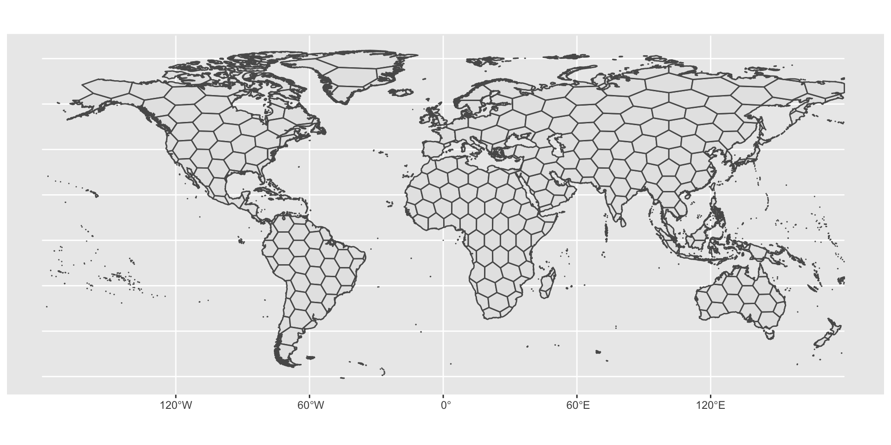
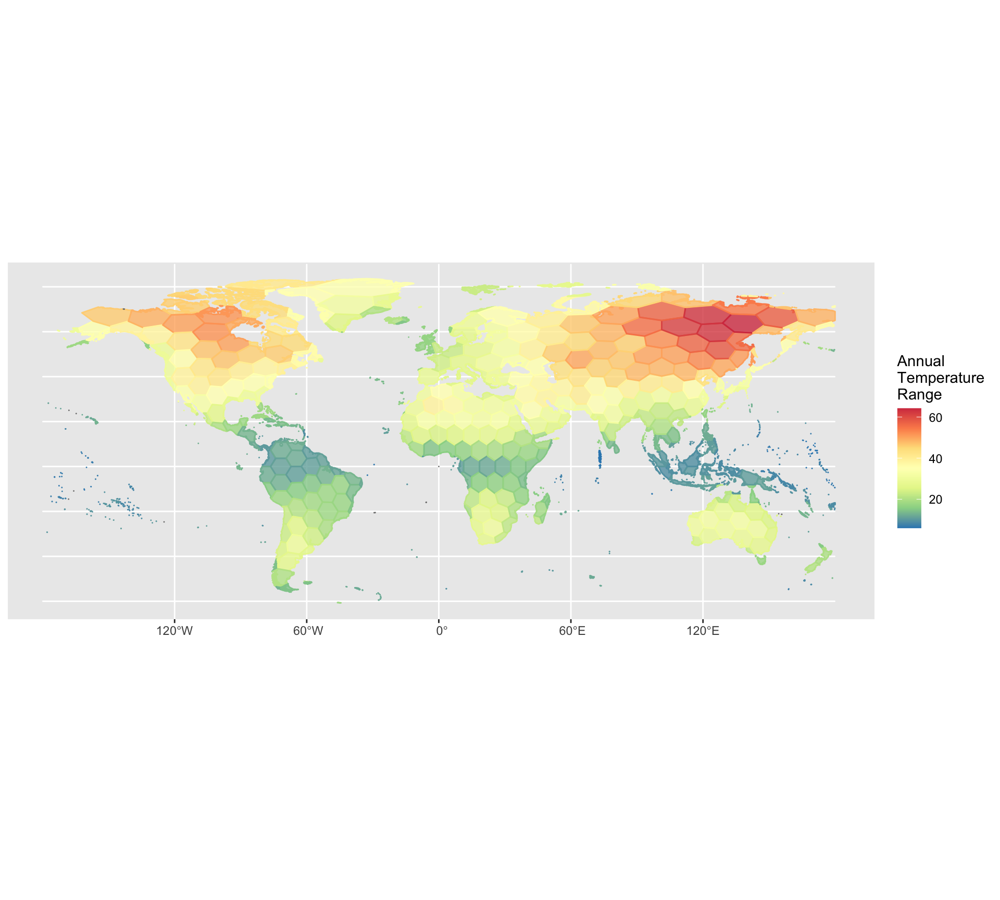
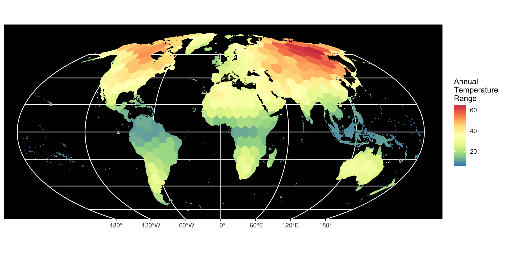
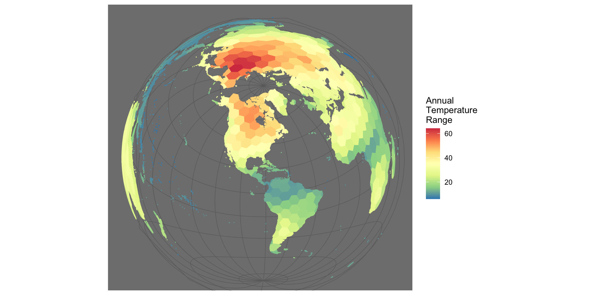

Making effective maps is extremely important to convey data that is spatially distributed. For me, I started making maps in ArcMap but I quickly realized that access to the software license was limited Therefore, most of my map-making activities has delved into R or QGIS (a open souce alternative of ArcMap). There are pros and cons of map making in R.
Pro: You are given better control and a wider variety of tools to make beautiful maps. Con: R can be very slow when it comes to plotting depending on if you parallel process or not. R may also be slower when it comes to basic operations such as intersecting geospatial data etc. So if you want speed, I suggest using QGIS and then plotting in R.
There are different types of geospatial data we can map in R (rasters, polygons, points, etc.), this tutorial will mainly go over polygons shapefiles, more specifically multipolygon shapefiles.
#packages
library(sf)
library(tidyverse)
library(lwgeom) This is how you read in your shapefile data:
df_shp <- st_read(
"~/Desktop/hexbin_wenviron/hexbin_wenviron.shp")## Reading layer `hexbin_wenviron' from data source `/Users/leoohyama/Desktop/hexbin_wenviron/hexbin_wenviron.shp' using driver `ESRI Shapefile'
## Simple feature collection with 464 features and 10 fields
## geometry type: MULTIPOLYGON
## dimension: XY
## bbox: xmin: -177.958 ymin: -60.77272 xmax: 180 ymax: 83.6341
## geographic CRS: WGS 84#Let's look at the data
df_shp## Simple feature collection with 464 features and 10 fields
## geometry type: MULTIPOLYGON
## dimension: XY
## bbox: xmin: -177.958 ymin: -60.77272 xmax: 180 ymax: 83.6341
## geographic CRS: WGS 84
## First 10 features:
## cell SR geo_avg MAT CM MAP WET ATR
## 1 1 56 1.091213 4.7616038 -7.087847 900.9742 300.04575 26.58891
## 2 2 NA NA -0.7031792 -15.135383 638.4850 297.98941 30.03473
## 3 3 NA NA -6.1747150 -22.750118 491.6231 190.38200 36.20150
## 4 4 NA NA -12.5492020 -29.791090 146.9178 70.94612 34.76204
## 5 8 NA NA -8.4239092 -19.696692 446.2876 142.48109 22.76368
## 6 9 7 1.688046 1.1910487 -9.261226 861.5570 276.14386 23.71292
## 7 10 50 1.209047 0.9827181 -12.573601 832.6850 286.08417 29.55614
## 8 11 NA NA 2.6216834 -5.239853 1059.2101 371.68143 18.05475
## 9 12 15 1.212341 -0.6845881 -17.013023 606.3929 253.82622 34.34307
## 10 13 22 1.096853 -7.2203846 -28.350182 262.0726 130.85980 46.19601
## NPP TREE geometry
## 1 550.4055 54513.9180 MULTIPOLYGON (((8.674604 54...
## 2 385.7403 11046.1836 MULTIPOLYGON (((-162.1393 5...
## 3 NA 8948.4346 MULTIPOLYGON (((180 65.0922...
## 4 0.0000 418.3625 MULTIPOLYGON (((178.8547 71...
## 5 NA 314.5493 MULTIPOLYGON (((27.02076 78...
## 6 332.4632 37050.3672 MULTIPOLYGON (((17.5353 68....
## 7 420.8561 50186.0430 MULTIPOLYGON (((21.89008 65...
## 8 420.8124 21194.8848 MULTIPOLYGON (((-158.6881 5...
## 9 418.0304 27562.4551 MULTIPOLYGON (((-148.919 59...
## 10 287.1639 17601.9375 MULTIPOLYGON (((-154.5998 7...You’ll notice that the object that we read in is called a simple feature, this is because we are using the ‘sf’ package to read in the data. Geospatial data is better manipulated as a simple feature class because it provdes more flexibility on what can be done with the data.
The data that was read in is a shapefile of the world divided into hexbins. Each row represent a hexbin polygon and there is information for different attributes for each of these hexbins:
Note: All data was averaged per hexbin
Here’s how we plot the basic shapefile
ggplot() +
geom_sf(data = df_shp)
Awesome, looks beautiful. We now have a map of the world in hexbin format. But let’s show more information. Let’s plot the world’s mean annual temperature range and let’s add some color.
ggplot() +
geom_sf(data = df_shp, aes(fill = ATR, color = ATR)) +
scale_fill_distiller(palette = "Spectral") +
scale_color_distiller(palette = "Spectral") +
labs(fill = "Annual\nTemperature\nRange", color = "Annual\nTemperature\nRange") +
theme(panel.background = element_rect(fill = "black", colour = NA))
Ok, but there’s another issue to tackle. While that map is great it may not represent the area of the earth’s various continents properly. Depending on the scale of your maps you may want to pick an appropriate projection. This tutorial is not going to teach you about projections. Instead I’ll show you code on how to re-project your amazing map to be more amazing.
First, we need to reproject the shapefile. We wil reproject using the mollweide projection, which is often best suited for global maps.
st_crs(df_shp) #this tells you what coordinate reference system you are in## Coordinate Reference System:
## User input: WGS 84
## wkt:
## GEOGCRS["WGS 84",
## DATUM["World Geodetic System 1984",
## ELLIPSOID["WGS 84",6378137,298.257223563,
## LENGTHUNIT["metre",1]]],
## PRIMEM["Greenwich",0,
## ANGLEUNIT["degree",0.0174532925199433]],
## CS[ellipsoidal,2],
## AXIS["latitude",north,
## ORDER[1],
## ANGLEUNIT["degree",0.0174532925199433]],
## AXIS["longitude",east,
## ORDER[2],
## ANGLEUNIT["degree",0.0174532925199433]],
## ID["EPSG",4326]]new_proj <- "+proj=moll +datum=WGS84 +no_defs +over" #assign mollweide projection
df_shp2 <- st_transform(df_shp, crs = new_proj) # reproject
st_crs(df_shp2) #notice how we changed the projected CRS?## Coordinate Reference System:
## User input: +proj=moll +datum=WGS84 +no_defs +over
## wkt:
## PROJCRS["unknown",
## BASEGEOGCRS["unknown",
## DATUM["World Geodetic System 1984",
## ELLIPSOID["WGS 84",6378137,298.257223563,
## LENGTHUNIT["metre",1]],
## ID["EPSG",6326]],
## PRIMEM["Greenwich",0,
## ANGLEUNIT["degree",0.0174532925199433],
## ID["EPSG",8901]]],
## CONVERSION["unknown",
## METHOD["Mollweide"],
## PARAMETER["Longitude of natural origin",0,
## ANGLEUNIT["degree",0.0174532925199433],
## ID["EPSG",8802]],
## PARAMETER["False easting",0,
## LENGTHUNIT["metre",1],
## ID["EPSG",8806]],
## PARAMETER["False northing",0,
## LENGTHUNIT["metre",1],
## ID["EPSG",8807]]],
## CS[Cartesian,2],
## AXIS["(E)",east,
## ORDER[1],
## LENGTHUNIT["metre",1,
## ID["EPSG",9001]]],
## AXIS["(N)",north,
## ORDER[2],
## LENGTHUNIT["metre",1,
## ID["EPSG",9001]]]]Ok now let’s plot this:
ggplot() +
geom_sf(data = df_shp2, aes(fill = ATR, color = ATR)) +
scale_fill_distiller(palette = "Spectral") +
scale_color_distiller(palette = "Spectral") +
labs(fill = "Annual\nTemperature\nRange", color = "Annual\nTemperature\nRange") +
theme(panel.background = element_rect(fill = "black", colour = NA))
We can also look at specific parts of the globe and get even more creative. Let’s say we wanted to center on Florida but at a global scale? Let’s first get the latitude and longitude of Gainesvile, Fl which is: 29.6516° N, -82.3248° W. We feed these coordinates into the new projection shown below for lat and lon:
df_shp_FL <- st_transform(df_shp, "+proj=laea +y_0=0 +lon_0=-82 +lat_0=29 +ellps=WGS84 +no_defs")ggplot() +
geom_sf(data = df_shp_FL, aes(fill = ATR, color = ATR)) +
scale_fill_distiller(palette = "Spectral") +
scale_color_distiller(palette = "Spectral") +
labs(fill = "Annual\nTemperature\nRange", color = "Annual\nTemperature\nRange") +
theme_dark()
Now you have seen a variety of ways to improve your maps.